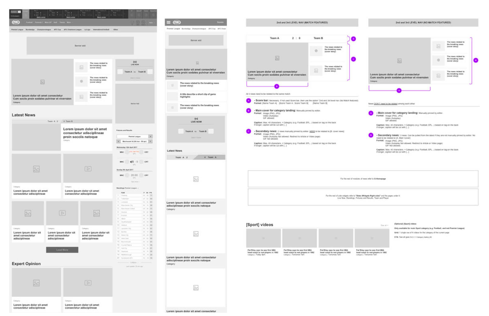

The brief: one site, every kind of fan
Sports fandom in Asia has a particular shape: the matches that matter most are often played in Europe, in the middle of the Asian night. Fans follow multiple sports at once, across every device they own, and range from someone who checks scores once a week to someone who tracks possession statistics during a live match.
Fox Sports Asia needed one responsive site to serve all of them — and the redesign had to convince a room of stakeholders with different priorities before anything could ship.
Start with the stakeholders, not the screens
The UX team opened with a design workshop that put the stakeholders inside the fan’s experience instead of debating features — and I was one of its facilitators. We split participants into groups, each assigned one of three personas, and gave them a concrete scenario: a typical week of a tennis fan during a tournament. Each group mapped the customer journey, brainstormed against it, and dot-voted the MVP.
The workshop did two jobs at once: it produced a shared, prioritized backlog — and it converted stakeholders into co-authors of the design direction rather than reviewers of it.
Personas grounded in interviews and data
From interviews and behavioral data, we grouped fans by intensity — casual, average, avid — and built personas with the texture that makes research actionable. Sam, our avid football fan in Singapore, watches the EPL on TV, follows La Liga on his laptop, checks his phone every few hours for match stats, and wants his watch to vibrate when Arsenal scores.
His pain points shaped the content strategy directly: the time difference from European games (highlights must work as well as live), commentary that didn’t fit his football culture, and top international events missing from coverage.

Sam, the avid fan: one of three research-grounded personas that anchored both the workshop and the design.
Wireframes that doubled as the spec
For delivery, I made one document carry both the responsive wireframes and the product function specs — every module annotated with its content rules, formats, and edge cases, for desktop and mobile side by side. Developers built from a single source of truth; nothing lived only in a meeting or a memory.

The working document: responsive wireframes and product function specs, together — a single source of truth for the build.
Outcome
- Launched as foxsportsasia.com, serving fans across the region.
- Content consumption rose 11% after the revamp.
What I learned
Sports fans were the original multi-device users — Sam taught me about cross-screen journeys years before it became a design cliché. And a wireframe that carries the spec is a contract: the discipline of writing content rules next to the layout caught more problems than any review meeting did.